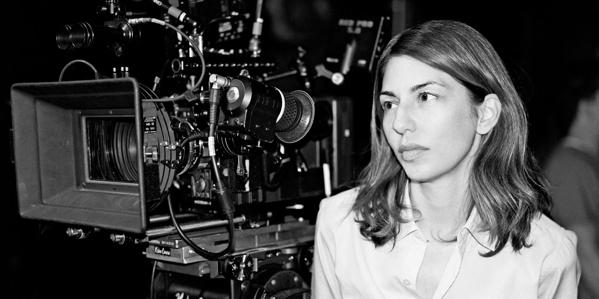
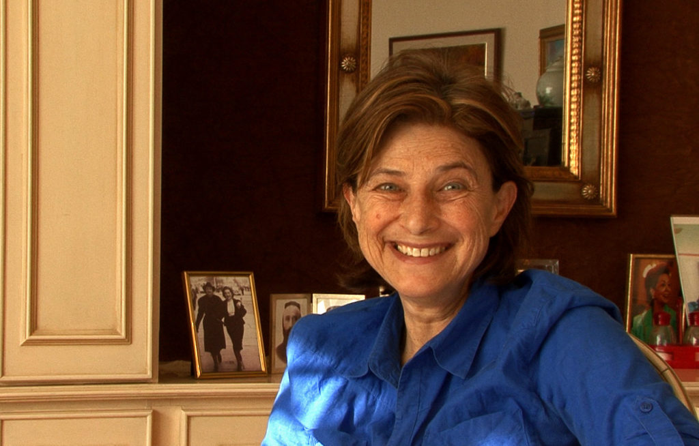
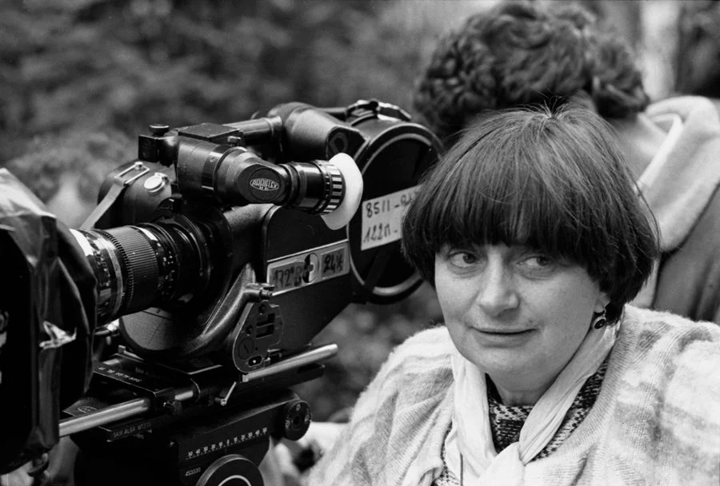
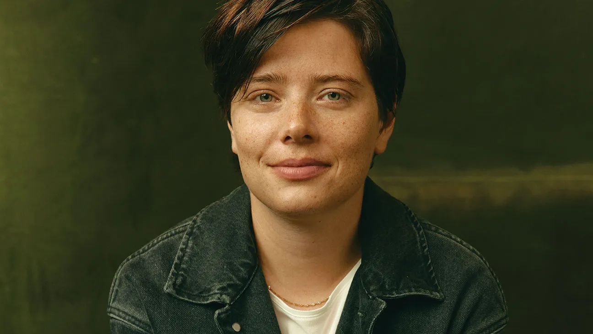

Mulheres no cinema
Céline Sciamma

Céline Sciamma (França) é a mente por trás de Retrato de uma Jovem em Chamas (2019), um dos filmes mais relevantes da década em termos de narrativa queer e linguagem visual. Seu trabalho é cirúrgico na construção de tensão emocional e simbologia. Sciamma explora desejo, silêncio e identidade com precisão minimalista, consolidando-se como uma das principais vozes do cinema europeu contemporâneo. Seu diferencial está na direção sensível com rigor estético, transformando olhares em discurso político.
Laís Bodanzky

Laís Bodanzky (Brasil) dirigiu Bicho de Sete Cabeças (2000), um dos filmes mais importantes do cinema brasileiro pós-retomada. A obra denunciou os abusos do sistema manicomial com realismo e contundência, pavimentando o caminho para um cinema socialmente engajado e tecnicamente maduro. Bodanzky tem trajetória sólida também na gestão cultural e políticas públicas, o que amplia seu alcance além da direção — é uma operadora estratégica do setor audiovisual nacional.
Sofia Coppola
Sofia Coppola (EUA) consolidou-se como uma diretora com assinatura autoral clara, apesar de carregar o peso de um sobrenome lendário. Com Encontros e Desencontros (2003), venceu o Oscar de Roteiro Original e posicionou-se como voz relevante da melancolia contemporânea. Filmes como Maria Antonieta e O Estranho que Nós Amamos mantêm seu foco em personagens femininas isoladas em ambientes opressivos e esteticamente refinados. Coppola domina o espaço entre o mainstream e o cinema de arte, sendo um case raro de branding pessoal com apelo indie e reputação sólida no circuito internacional.
Chantal Akerman
Chantal Akerman (Bélgica) é amplamente reconhecida como uma das vozes mais radicais e influentes do cinema experimental. Seu filme Jeanne Dielman, 23 Quai du Commerce, 1080 Bruxelles (1975) foi eleito o melhor filme de todos os tempos pela crítica da Sight & Sound em 2022, desbancando clássicos canônicos. Akerman levou ao limite a ideia de tempo real, repetição e silêncio como recursos narrativos, criando experiências estéticas desconfortáveis e transformadoras. Sua obra é referência em estudos de gênero, tempo e rotina, influenciando tanto o cinema quanto a videoarte.
Agnes Varda
Agnès Varda (França) foi uma das figuras mais influentes do cinema mundial e a única mulher associada diretamente ao núcleo da Nouvelle Vague. Sua filmografia, que inclui Cléo das 5 às 7 e Os Catadores e Eu, rompeu fronteiras entre ficção e documentário, sempre com um olhar poético, político e profundamente pessoal. Varda operava com alta autonomia criativa e pensamento visual à frente de seu tempo, sendo reconhecida tardiamente com um Oscar honorário. Sua marca está na reinvenção constante da linguagem cinematográfica com baixo orçamento e impacto cultural massivo — um modelo de gestão autoral resiliente e inovador.
Charlotte Wells
Charlotte Wells (Escócia) estreou com Aftersun (2022), um dos filmes mais aclamados da década por sua abordagem emocional contida e estrutura narrativa fragmentada. Em sua estreia, Wells demonstrou domínio absoluto da linguagem cinematográfica, criando uma experiência sensorial com altíssima carga simbólica. Seu nome entrou no radar global como uma diretora com assinatura autoral desde o primeiro longa — uma raridade no mercado.